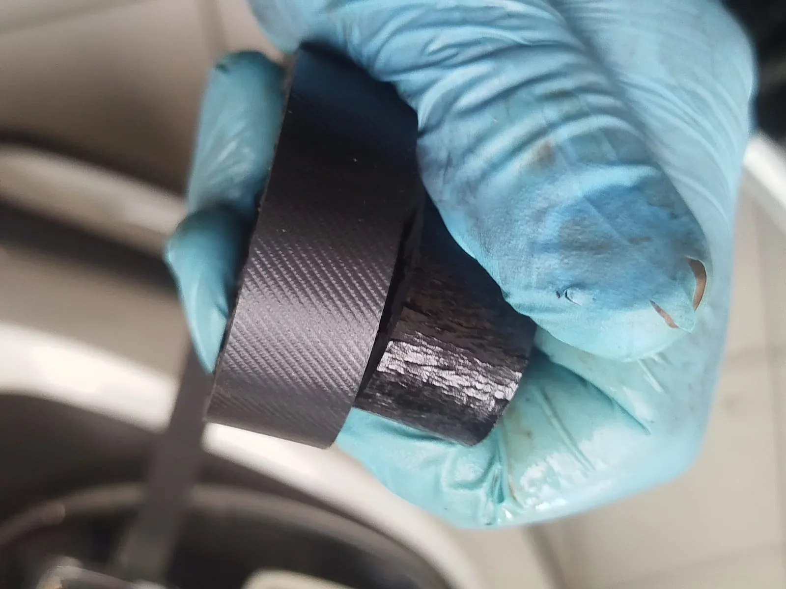

PureTech-distributieriem: zie het verschil tussen een goede en een aangetaste riem

Twijfel je over de staat van jouw distributieriem? Neem contact op voor een controle bij Garage Peter in Bredene.
1.2 PureTech: distributieriem in olie
Bij bepaalde 1.2 PureTech-motoren draait de distributieriem in motorolie. Als de riem aantast of afbrokkelt, kunnen losgekomen deeltjes in het oliecircuit terechtkomen en bijvoorbeeld de olieaanzuigzeef verstoppen. Dat kan tot oliedrukproblemen en ernstige motorschade leiden. Daarom controleren we de staat van de riem en, wanneer nodig, de relevante onderdelen van het smeersysteem. Niet elke PureTech-motor gebruikt dezelfde distributieconstructie.
Barsten, slijtage of afbrokkeling?
Barstjes, zwelling, rafels of loskomend materiaal zijn signalen om een distributieriem verder te laten beoordelen. Een riem kan er aan de buitenkant nog redelijk uitzien terwijl nader onderzoek nodig is. Bij Garage Peter bekijken we welke controle en vervanging voor jouw motor aangewezen zijn.
Wanneer moet de distributieriem vervangen worden?
Het juiste interval hangt af van merk, model, motor en onderhoudsvoorschriften. Zowel kilometerstand als leeftijd kunnen belangrijk zijn. We controleren de gegevens van jouw specifieke wagen.
Wat controleren we?
Afhankelijk van de motor beoordelen we de distributieriem, spanrollen, geleiderollen en waar nodig de waterpomp. Bij motoren met een riem in olie kijken we ook naar de relevante onderhoudsvoorschriften en mogelijke vervuiling.
Ook distributiekettingen
Een ketting is niet altijd onderhoudsvrij. Bij geluiden, timingproblemen of foutcodes onderzoeken we eerst de oorzaak.
Vraag een prijs op maat
Vermeld merk, model, motorisering, bouwjaar en kilometerstand. Zo kunnen we nagaan welke onderdelen en werkzaamheden nodig zijn.
Echte werkplaatsfoto’s van PureTech-distributieherstellingen
Hieronder zie je foto's van werkzaamheden aan een Citroën C3 1.2 PureTech bij Garage Peter. De volledige fotoreeks toont meer stappen van de herstelling.

Bekijk de volledige fotoreeks van de Citroën C3 PureTech-herstelling →
Lees ook ons nieuwsartikel over PureTech-distributieriemproblemen →
Distributieservice voor alle merken
We voeren distributiecontroles en -herstellingen uit aan verschillende automerken, met bijzondere praktijkervaring in Renault, Dacia, Citroën en Opel. Ook bij andere merken bekijken we de technische voorschriften voor het exacte motortype.
Bekijk ook ons auto-onderhoud → · Autodiagnose en motorstoringen →